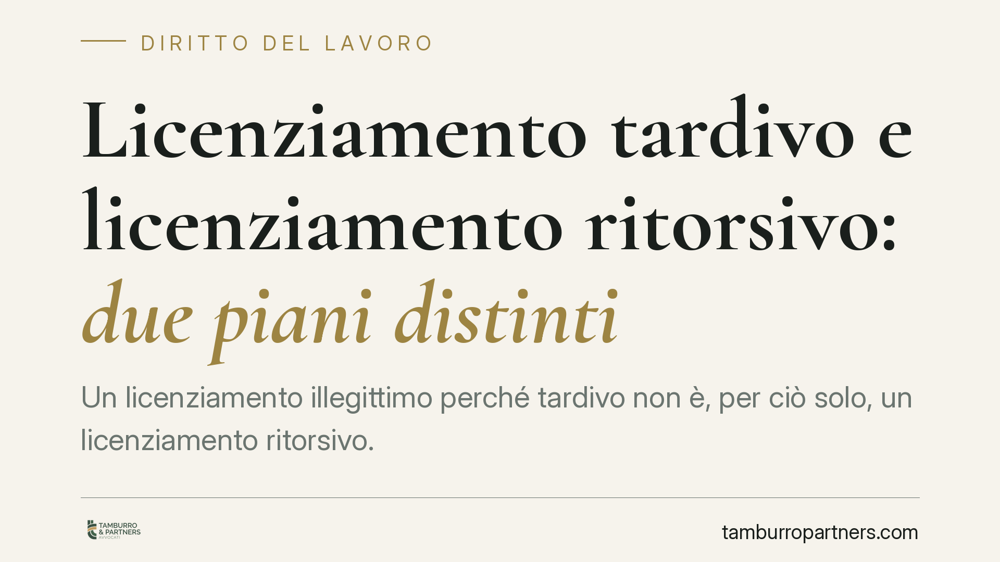

Licenziamento tardivo e licenziamento ritorsivo: due piani distinti
Un licenziamento illegittimo perché tardivo non è, per ciò solo, un licenziamento ritorsivo. La Corte di Cassazione, Sezione Lavoro, torna a distinguere il vizio procedurale dal movente illecito: se l'inadempimento disciplinare esiste, il motivo di rappresaglia non può dirsi unico e determinante. Cambia il regime di tutela e, con esso, la strategia difensiva di chi impugna.

Il caso
Una lavoratrice impugna il proprio licenziamento sostenendo, tra l'altro, che la contestazione disciplinare fosse tardiva e che il recesso avesse natura ritorsiva. La Corte d'Appello di Milano riconosce l'illegittimità del licenziamento per violazione del principio di immediatezza, ma esclude la nullità per motivo ritorsivo. La Cassazione conferma l'impostazione: sono due piani da tenere separati.
Nota redazionale: il riferimento all'ordinanza citata dalla fonte reca un numero e un anno da confermare prima di ogni utilizzo processuale. Il principio di diritto, invece, è consolidato e prescinde dalla singola pronuncia.
Inquadramento normativo
La tardività attiene al procedimento disciplinare. L'art. 7 dello Statuto dei lavoratori (L. 300/1970) impone che la contestazione dell'addebito sia tempestiva: il datore deve reagire senza ingiustificato ritardo dal momento in cui ha conoscenza del fatto. Il ritardo eccessivo viola il principio di immediatezza e rende il licenziamento illegittimo, ma resta un vizio di natura procedurale.
La ritorsione, invece, riguarda il movente del recesso. Ai sensi dell'art. 1345 c.c., il contratto è illecito quando le parti sono determinate a concluderlo esclusivamente da un motivo illecito comune; applicato al licenziamento, il recesso è nullo — con la conseguente reintegrazione ex art. 1418 c.c. — solo quando il motivo di rappresaglia (ad esempio, la reazione a una legittima rivendicazione del lavoratore) è unico e determinante.
Sono quindi due categorie diverse: la prima misura la correttezza del *come* si è proceduto; la seconda indaga il *perché* si è deciso di licenziare.
Il principio: illegittimità non equivale a nullità
Il punto chiave della decisione è netto. La sola ingiustificatezza del recesso — anche quando deriva da una contestazione tardiva — non fa presumere la ritorsione. Se esiste un inadempimento disciplinare oggettivo del lavoratore, quel fatto storico impedisce di ritenere il motivo ritorsivo come esclusivo.
In altri termini: perché scatti la nullità occorre che la rappresaglia sia l'unica ragione del licenziamento. Se accanto ad essa sopravvive un motivo disciplinare reale, il licenziamento potrà essere illegittimo per vizi propri (come la tardività), ma non nullo per ritorsione. Le conseguenze non sono equivalenti: la nullità apre alla tutela reintegratoria piena, l'illegittimità procedurale conduce, di regola, a tutele di diverso e minore contenuto.
Implicazioni pratiche
Per il lavoratore, la lezione è di metodo. Contestare la tardività può bastare a far dichiarare illegittimo il licenziamento, ma non trasforma automaticamente il recesso in ritorsivo. Chi punta alla reintegrazione per nullità deve costruire una prova autonoma del motivo illecito e del suo carattere assorbente.
Per il datore di lavoro, il messaggio speculare è che la tempestività della contestazione resta un presidio da rispettare: un ritardo evitabile espone comunque a un giudizio di illegittimità, con i relativi costi.
Sul piano dei termini, resta fermo l'art. 6 della L. 604/1966, come modificato dalla L. 183/2010: il licenziamento va impugnato, anche in via stragiudiziale, entro 60 giorni dalla comunicazione; l'impugnazione perde efficacia se, entro i successivi 180 giorni, non è depositato il ricorso in tribunale.
Cosa fare in concreto
- Rispettare i termini: impugna entro 60 giorni dalla comunicazione del licenziamento e deposita il ricorso giudiziale entro i 180 giorni successivi all'impugnazione stragiudiziale.
- Distingui i vizi: separa nell'atto la censura sulla tardività (procedura) dalla deduzione del motivo ritorsivo (movente), senza confonderle.
- Costruisci la prova della ritorsione: se chiedi la nullità, allega e prova in positivo che il motivo di rappresaglia è unico e determinante; non affidarti alla sola illegittimità del recesso.
- Articola le domande: valuta una domanda principale di nullità per ritorsione e una subordinata di illegittimità per tardività, così da presidiare entrambi i regimi di tutela.
- Verifica la solidità dell'addebito: la presenza di un inadempimento disciplinare oggettivo indebolisce la tesi ritorsiva; è opportuno valutarla prima di impostare la strategia.
---
Contributo informativo a cura di Tamburro & Partners - Avv. Giuseppe Tamburro. Non costituisce parere legale.
Ogni storia di lavoro ha i suoi tempi.
Se gestisci HR e vuoi un confronto su contenzioso, ispezioni o licenziamenti, scrivi allo studio. Ti rispondiamo entro un giorno lavorativo.